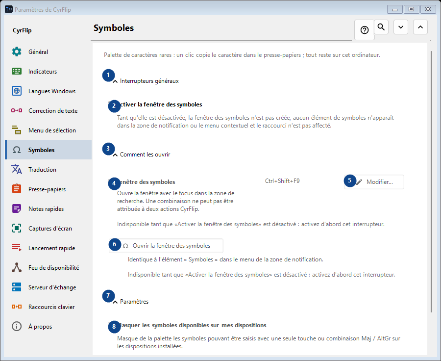
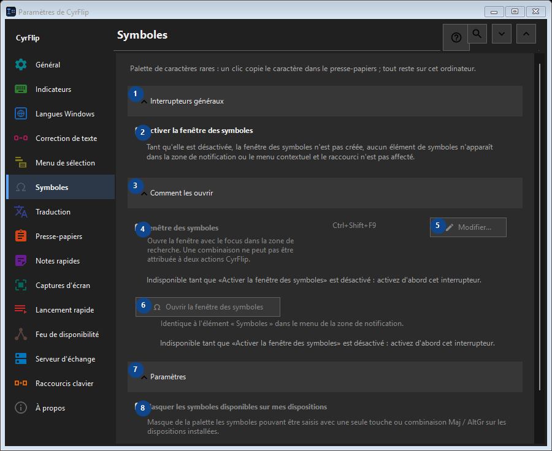

Symboles
À quoi cela sert
Palette de caractères rares : un clic copie le caractère dans le presse-papiers ; tout reste sur cet ordinateur.


Ordre des actions
Les réglages s’appliquent immédiatement. Aucun ordre n’est imposé ; utilisez les groupes ci-dessous.
Éléments
1. Interrupteurs généraux
Utilisez cette commande pour l’action indiquée. Lisez toute confirmation avant de l’accepter.
Vos raccourcis2. Activer la fenêtre des symboles
Tant qu'elle est désactivée, la fenêtre des symboles n'est pas créée, aucun élément de symboles n'apparaît dans la zone de notification ou le menu contextuel et le raccourci n'est pas affecté.
Vos raccourcis3. Comment les ouvrir
Utilisez cette commande pour l’action indiquée. Lisez toute confirmation avant de l’accepter.
Vos raccourcis4. Fenêtre des symboles
Indisponible tant que «Activer la fenêtre des symboles» est désactivé : activez d'abord cet interrupteur. Cet élément est indisponible. Activez d’abord sa fonction ou sélectionnez une entrée.
Vos raccourcis5. Modifier - Fenêtre des symboles
Indisponible tant que «Activer la fenêtre des symboles» est désactivé : activez d'abord cet interrupteur. Cet élément est indisponible. Activez d’abord sa fonction ou sélectionnez une entrée.
Vos raccourcis6. Ouvrir la fenêtre des symboles
Indisponible tant que «Activer la fenêtre des symboles» est désactivé : activez d'abord cet interrupteur. Cet élément est indisponible. Activez d’abord sa fonction ou sélectionnez une entrée.
Vos raccourcis7. Paramètres
Utilisez cette commande pour l’action indiquée. Lisez toute confirmation avant de l’accepter.
Vos raccourcis8. Masquer les symboles disponibles sur mes dispositions
Indisponible tant que «Activer la fenêtre des symboles» est désactivé : activez d'abord cet interrupteur. Cet élément est indisponible. Activez d’abord sa fonction ou sélectionnez une entrée.
Vos raccourcis